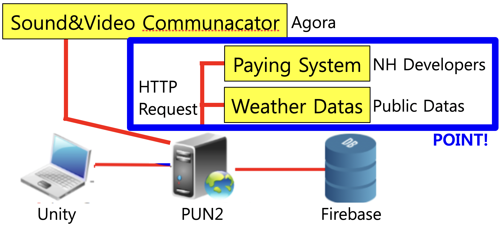
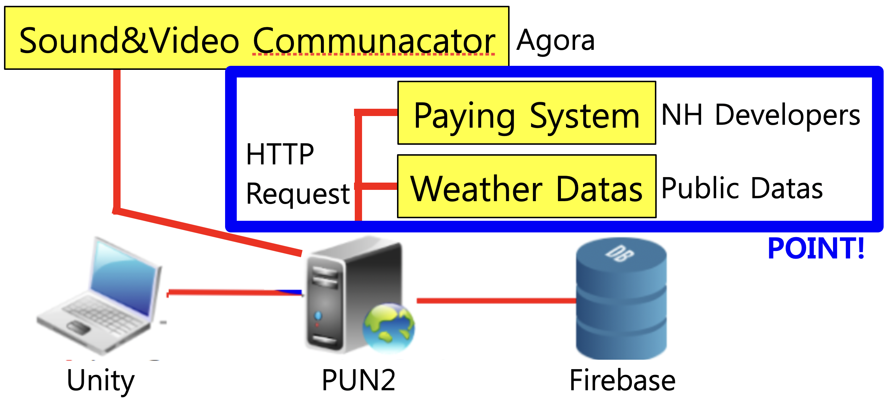

구현 기능

|
이동 및 점프 기능 방향키를 눌러서 이동할 수 있고 스페이스바를 눌러서 점프도 할 수 있습니다. |

|
식물 정보 조회 기능 메타버스 환경 내에서 식물한테 다가간 후 버튼을 클릭하면 식물의 실제 모습을 포함한 여러 가지 정보를 볼 수 있습니다. |

|
상점 접속 기능 농부의 상점에 접속해서 현재 판매 중인 농작물을 조회할 수 있고 구매할 수 있습니다. |

|
농작물 구매 기능 보유 중인 캐시로 농작물을 구매할 수 있습니다. 만약 캐시가 부족하면 충전할 수 있습니다. |
사회에 기여하려고 한 점
메타버스 환경에서도 농작물을 키울 수 있으므로 농작물을 키우는 장소까지 직접 갈 필요가 없습니다. 그리고 인공지능 프로그램을 통해서 컴퓨터가 농작물을 알아서 관리해주는 것도 가능합니다.
메타버스 환경에서도 농작물을 키울 수 있으므로 농작물을 키우는 장소까지 직접 갈 필요가 없습니다. 그리고 인공지능 프로그램을 통해서 컴퓨터가 농작물을 알아서 관리해주는 것도 가능합니다.
배경과 목적
메타버스 환경이 아직 대한민국에 많이 구축되지 않았습니다. 가장 대표적으로, 메타버스 환경에서 농작물을 키울 수 있는 서비스가 지금 대한민국에 없습니다. 그래서 메타버스 환경에서 농작물을 키울 수 있는 프로그램을 구현하게 되었습니다.
메타버스 환경이 아직 대한민국에 많이 구축되지 않았습니다. 가장 대표적으로, 메타버스 환경에서 농작물을 키울 수 있는 서비스가 지금 대한민국에 없습니다. 그래서 메타버스 환경에서 농작물을 키울 수 있는 프로그램을 구현하게 되었습니다.
배운 점
- Unity에서 HTTP Request를 보내는 법을 알게 되었습니다.
- HTTP Request를 보내서 NH오픈플랫폼으로 결제 기능을 구현하는 법을 알게 되었습니다.
- HTTP Request를 보내서 공공 데이터 포털에서 공공 데이터를 불러오는 법을 알게 되었습니다.
- Unity에서 Agora를 이용해서 음성 통신과 영상 통신을 하는 법을 알게 되었습니다.
- PUN2로 서버를 구축하는 법과 Firebase로 데이터베이스를 구축하는 법을 알게 되었습니다.
- Unity로 메타버스 환경을 구축하는 법을 알게 되었습니다.
진행 절차
- Agora를 이용해서 음성 통신하는 예제를 다운받았습니다.
- PUN2로 서버를 구축하였고 Firebase로 데이터베이스를 구축하였습니다.
- NH오픈플랫폼으로 결제 기능을 구현하고 공공 데이터 포털에서 날씨 데이터를 불러오도록 하였는데, 이것이 가장 어려웠습니다.
- 그래서 구글에서 Unity에서 HTTP Request를 전송하는 예제를 제 프로그램에 적용해서 Unity를 NH오픈플랫폼과 연동하였습니다.
- 그리고 대회를 주최한 회사에서 진행한 강의를 다시 보고 따라한 후 소스 코드를 수정해서 공공 데이터 포털에서 날씨 데이터를 불러오도록 하였습니다.
- 디자이너가 Zeplin에서 설계한 내용을 꼼꼼하게 보면서, Unity에서 직접 구현하였습니다.
- 이렇게 해서 원하는 프로그램을 구현할 수 있었습니다.
- 시연 영상을 촬영한 후 Google Drive에 올려서 기획자한테 보냈습니다.
담당한 역할 및 가장 노력한 점
프로그램 구현 총괄 담당, HTTP Request로 NH오픈플랫폼 연동 및 공공데이터포털 API 사용
프로그램 구현 총괄 담당, HTTP Request로 NH오픈플랫폼 연동 및 공공데이터포털 API 사용
전체 구조


사용 기술
Unity, Photon, Firebase, Agora, NH오픈플랫폼, HTTP, Zeplin, Google Drive
Unity, Photon, Firebase, Agora, NH오픈플랫폼, HTTP, Zeplin, Google Drive
개발 환경
Unity 2020.1.9f1
Unity 2020.1.9f1